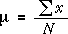
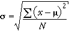

Statistics and parameters
The earlier pages in this section have introduced summary statistics that describe the centre and spread of sample data. These are called sample statistics.
Corresponding summaries can be obtained from the population from which the samples are selected and are called population parameters. However we use different symbols and, in the case of the population standard deviation, a slightly different formula.


Note that we do not expect you to remember these formula but you do need recognize the symbols µ and σ and that they refer to the population mean and standard deviation.